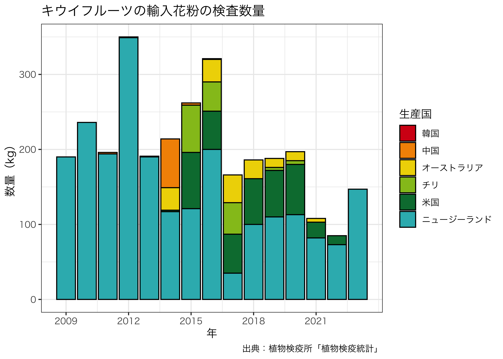

library(dplyr)
library(DT)
library(ggplot2)
library(ggsci)
figdir <- "../fig"
dir.create(figdir, showWarnings = FALSE)Plant Quarantine Statistics: Inspection Quantity of Imported Pollen
1 Data
1.1 Plant Quarantine Statistics
植物検疫統計（https://www.maff.go.jp/pps/j/tokei/index.html）を手動でダウンロードし，CSVファイルに整理する。
1.2 2012–2023
植物検疫統計
植物防疫所が行っている検査等の結果に関する数値情報を取りまとめたものです。
統計レポート
| １１．輸入植物品目別・国別検査表 | 種子 | 果樹 （03-13） | ｷｳｲﾌﾙｰﾂ(ｼﾅｻﾙﾅｼ) (花粉) |
https://www.pps.maff.go.jp/TokeiWWW/Pages/report/index.xhtml
df2012_2023 <- read.csv("../data/植物検疫統計/kiwifruit_pollen.csv", header = TRUE)
df2012_2023 |>
glimpse()Rows: 50
Columns: 9
$ 品目 <chr> "シナサルナシ（キウイフルーツ）（花粉）", "シナサルナシ（キウイフルーツ）（花粉）", "シナサルナシ（キウイフルーツ…
$ 生産国 <chr> "中国", "ニュージーランド", "小計", "中国", "ニュージーランド", "小計", "中国", "米国", "…
$ 検査件数 <int> 1, 7, 8, 1, 4, 5, 4, 2, 2, 3, 11, 3, 4, 3, 3, 13, 1, 1, 1, 1,…
$ 検査数量 <int> 1, 319, 320, 1, 110, 111, 65, 2, 30, 117, 214, 3, 75, 63, 121…
$ 消毒件数 <int> NA, NA, NA, NA, NA, NA, 0, 0, 0, 0, 0, 0, 0, 0, 1, 1, 0, 0, 0…
$ 消毒数量 <int> NA, NA, NA, NA, NA, NA, 0, 0, 0, 0, 0, 0, 0, 0, 1, 1, 0, 0, 0…
$ 廃棄件数 <int> NA, NA, NA, NA, NA, NA, 2, 0, 0, 0, 2, 3, 0, 0, 1, 4, 0, 0, 0…
$ 廃棄数量 <int> NA, NA, NA, NA, NA, NA, 2, 0, 0, 0, 2, 3, 0, 0, 20, 23, 0, 0,…
$ 年 <int> 2012, 2012, 2012, 2013, 2013, 2013, 2014, 2014, 2014, 2014, 2…1.3 2009–2013
キウイフルーツかいよう病の新系統（Psa3系統）防除対策会議
参考資料1 穂木・苗花粉の輸入実績
https://www.maff.go.jp/j/syouan/syokubo/boujyo/140529_psa3.html
df2009_2013 <- read.csv("../data/植物検疫統計/kiwifruit_pollen_2009-2013.csv", header = TRUE)
df2009_2013 |>
glimpse()Rows: 8
Columns: 4
$ 生産国 <chr> "ニュージーランド", "ニュージーランド", "中国", "ニュージーランド", "中国", "ニュージーランド", "中国…
$ 件数 <int> 9, 8, 2, 7, 1, 8, 1, 5
$ 数量 <int> 190, 236, 2, 194, 1, 349, 1, 190
$ 年 <int> 2009, 2010, 2011, 2011, 2012, 2012, 2013, 20131.4 Merge
country_order <- df2012_2023 |>
summarise(total = sum(検査数量, na.rm = TRUE), .by = 生産国) |>
arrange(total) |>
pull(生産国)
df2012_2023$生産国 <- factor(df2012_2023$生産国, levels = country_order)
df2012_2023_filtered <- df2012_2023 |>
filter(生産国 != "小計") |>
mutate(件数 = 検査件数, 数量 = 検査数量) |>
select(生産国, 件数, 数量, 年)|>
filter(年 > 2013)
df <- rbind(df2012_2023_filtered, df2009_2013)2 Tables
DT::datatable(
df2012_2023, rownames = FALSE, filter = 'top',
extensions = 'Buttons',
options = list(
pageLength = 10,
dom = 'Blfrtip',
buttons = list(
c('csv', 'excel'),
I('colvis')
)
)
)DT::datatable(
df, rownames = FALSE, filter = 'top',
extensions = 'Buttons',
options = list(
pageLength = 10,
dom = 'Blfrtip',
buttons = list(
c('csv', 'excel'),
I('colvis')
)
)
)3 Figures
p <- ggplot(data = df, aes(x = 年, y = 数量, fill = 生産国)) +
geom_bar(stat = "identity", position = "stack", color = "black") +
scale_x_continuous(breaks = seq(min(df$年), max(df$年), by = 3)) +
labs(
title = "キウイフルーツの輸入花粉の検査数量",
x = "年",
y = "数量（kg）",
fill = "生産国",
caption = "出典：植物検疫所「植物検疫統計」"
) +
theme_bw() +
scale_fill_frontiers() +
theme(text = element_text(family = "Hiragino Sans"))
ggsave("pollen_import.pdf", plot = p, device = cairo_pdf, path = figdir)Saving 7 x 5 in imagep
2014年以降は検査数量を表しており，輸入数量より少ない可能性がある。
country_map <- tibble::tibble(
original = c("米国", "ニュージーランド", "チリ", "韓国",
"中国", "イラン", "カナダ", "ジョージア", "オーストラリア"),
english = c("United States", "New Zealand", "Chile", "South Korea",
"China", "Iran", "Canada", "Georgia", "Australia")
)
df <- df |>
left_join(country_map, by = c("生産国" = "original")) |>
mutate(
country = factor(coalesce(english, 生産国),
levels = rev(c("New Zealand", "Chile", "Australia",
"United States", "South Korea", "China",
"Iran", "Canada", "Georgia")))
) |>
select(-english)
country_list <- c("New Zealand", "Chile", "Australia",
"United States", "South Korea", "China",
"Georgia", "Iran", "Canada")
color_palette <- setNames(pal_uchicago()(length(country_list)), country_list)
p <- ggplot(data = df, aes(x = 年, y = 数量, fill = country)) +
geom_bar(stat = "identity") +
scale_x_continuous(breaks = seq(min(df$年), max(df$年), by = 3)) +
labs(
# title = "Inspection quantity of imported kiwifruit pollen",
x = "Year",
y = "Inspection quantity (kg)",
fill = "Country",
# caption = "Source: Plant Protection Station, 'Plant Quarantine Statistics'"
) +
theme_bw() +
facet_wrap(~ country, scales = "free_y") +
# scale_fill_uchicago() +
scale_fill_manual(values = color_palette, drop = TRUE) +
theme(
legend.position = "none",
panel.border = element_blank(),
axis.line.x = element_line(linewidth = .25),
axis.line.y = element_line(linewidth = .25),
strip.background = element_rect(fill = NA, color = NA),
strip.text = element_text(face = "bold"),
text = element_text(family = "Helvetica")
)
ggsave("figure4.pdf", plot = p, path = figdir, width = 8, height = 6)
ggsave("figure4.png", plot = p, path = figdir, width = 8, height = 6, dpi = 600)
p